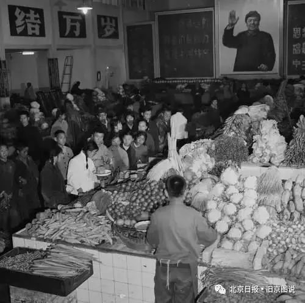
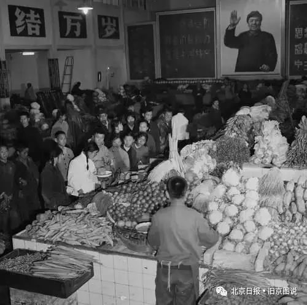

舌尖上的民俗 | 当代北京饮食文化的传承与发展
来源：北京东城
[摘要] 当代北京饮食文化的发展是同整个社会的发展历程联系在一起的。以“文化大革命”的开始和改革开放为节点，可以分为三个阶段。不同阶段的政治和社会背景构成了当时北京饮食文化的外在 环境。北京一直是一个人口流动频繁的地区，这种人口的流动也对饮食文化的发展产生了重要的影响。纵观当代社会北京饮食文化的发展历程，其发展的特点可以归结为时代性、多元性和开放性。
[关键词] 当代北京饮食文化；发展历程；人口流动
文化是同社会的发展联系在一起的，社会发展程度决定了文化形态的主要面貌。经济不但提供了文化发展的物质基础和动力，而且在某种程度上决定了文化发展的方向。当代北京饮食文化的发展也是同整个社会的发展历程紧密联系在一起的，因此，我们可以在饮食文化中发现社会的深刻烙印。
当代北京饮食文化传承与发展的政治与社会背景
从整体上来说，当代北京饮食文化传承与发展的政治与社会环境必须以改革开放前后分为两个阶段。这两个不同的阶段其所具有的经济、政治和文化背景对北京饮食文化的传承与发展的影响是不同的。
改革开放以前，整个社会环境的一个总的特点是物资匮乏、社会固化、城乡分割、计划经济和抑制商业。这种社会特点对饮食文化的发展产生的影响主要表现为食材的匮乏、为食而食。当时最著名的一句口号是“人吃饭是为了活着，但活着不是为了吃饭”。人们尊崇的饮食观是节约、足量，反对铺张浪费。温饱成为人们在饮食方面首要和迫切的愿望。对于饮食的质量、就餐的环境等方面的追求成为资本主义生活方式的象征。在这种社会环境中，饥饿成为许多人对那个年代独特的回忆，特别是在三年自然灾害期间许多人被饿死，更是成为这一阶段饮食史上的一个著名的事件。但同时，我们也不能排除许多这一时代所特有的关于饮食的美好记忆，例如刘绍棠的《榆钱饭》、张洁的《挖荠菜》以及许多《知青回忆录》中所叙述的知青下乡时一些“偷鸡摸狗”的故事。可以说，正是在这种食物极度缺乏的社会环境下，人们最大限度地利用了各种能够利用的自然资源来弥补食物的短缺，从而使某些食材的用途发挥到了最大化，例如对土豆、玉米和高粱等杂粮的食用。社会的固化产生了两个社会事实，一个是地域分割，一个是城乡分割。地域分割使得地区之间社会流动十分困难，限制了地区之间饮食文化的传播和交流，但也形成了各种具有独特地方特色的饮食文化。城乡分割的户籍制度使得城市和乡村成为截然二分的两个世界。
在很长一段时间内，农业生产的主要任务就是支持城市的建设，上交公粮不但是一项生产任务，更是一项政治任务，农民形象地延续封建时代的传统而将之称为“皇粮国税”。而这项任务对农民的生活产生的影响是十分重大的，它使得农民必须花费更多的时间和精力来从事生产劳动，而有限的耕地资源和技术条件使得农民必须尽可能地精耕细作，在农田上投入更多的时间和精力。大量公粮的上交不但导致了农民自己家庭的粮食不足，而且剥夺了农民种植其它经济作物的权利。除此之外，包括 蔬菜、肉、蛋、奶、果在内的各种生活副食品也要依靠农村来供应城市。城市作为国家重点发展的对象，享受到许多农村没有的政策倾斜和福利优惠，饮食文化作为这方面的标志首先成为农村的人们向往的对象，人们用“吃商品粮的”来形象地表达对城市居民生活的羡慕。
计划经济体制的实行有其特定的历史背景，就其对饮食文化方面的影响来说，主要表现在导致了人们饮食生活的单一化。这种单一化不但表现在城市，农村地区也是一样。如果说城市地区饮食生活的单一化是因为没有选择，那么农村地区的单一化的饮食生活则是因为集体不允许人们有更多的选择，当然贫困的经济条件也是这种单一化的重要影响因素。抑制商业限制了人们在鸡鸭、肉蛋等方面的买卖，这不但使买者没有更多的食材来改善和调节单一的饮食生活，也使得卖者失去了有限的经济来源，当时人们将这种打击小商品经济的行为称为“割资本主义尾巴”。但是毕竟人们的生活是需要这种互通有无的需要的，私下的交易和乡村庙会、集市等场合的买卖仍然在一定范围内存在。
改革开放后，国家改变了原有的经济体制和社会发展模式，确立了社会主义市场经济体制，各方面的能动性得到了极大的提高，物资不断充裕，城乡居民的恩格尔系数不断下降，人们的生活得到极大的改善，从温饱过渡到了小康水平。以经济发展为中心的政策，使得包括商业、服务业在内的第三产业得到极大的发展，众多待业在家的年轻人到北京、上海等大中城市开办餐馆、酒吧等餐饮企业，既解决了就业问题，也使得人们的饮食生活和消费选择更加多样化。以公有制为基础多种所有制经济共同发展的经济制度的确立，不但为城乡各地的人们敞开了发家致富的门路，也使得接受服务的人们的日常生活更加便利。在这种情况下，社会流动不断加快，区域之间、城乡之间交流日益活跃，中外交流也逐渐增多。区域间流动的加快，使得原有的社会固化状态得以打破，物资流动更加顺畅，人员往来更加频繁，逐渐形成了全国统一的大市场，现代物流业开始发展起来。各种大型连锁性的餐饮企业从北京、上海等大城市走向了苏州、武汉等中等城市，从沿海走向内陆。而户籍制度的松动，使得城乡流动日益频繁，长期形成的城乡二元分化的经济结构被逐渐打破，人们开始共享改革开放的成果。农民进城，在接受某些城市文化所代表的现代饮食文化理念的同时，也将原有的乡村饮食文化观念和习俗带到了城市，形成了一些具有地域色彩的群体亚文化。
20 世纪 90 年代以来，尤其是加入WTO以后，中外之间的交流越发频繁，包括饮食、武术、国学在内的传统文化迅速传到了世界各地，中餐馆在世界各地遍地开花，不但继续受到华人华侨的热爱，也逐渐受到蓝眼睛白皮肤的西方人的青睐，中华美食得到了全世界的认可；同时，包括肯德基、麦当劳在内的快餐文化，日剧、韩剧、好莱坞大片在内的影视文化都迅速在中华大地传播开来，包括沃尔玛、丰田、三星在内的世界 500 强企业绝大部分在中国设有分支机构，中国已经成为日益开放的国际社会的一份子。
同时，改革开放以来的三十多年，也是包括科学技术、文化思想在内的国家综合实力迅速上升的 三十多年。科学技术的新发展，使食物的储藏、保鲜和发酵技术得到极大的改进。饮食机械工业的迅猛发展，使过去陈旧的厨房设备迅速实现了现代化；包装保鲜工业的崛起，则使得食品的长时间完好存放成为可能；食品制造业的现代化使食品的生产效率大大提高，食品生产更加卫生、规范、有序。不仅如此，在食料的拓展方面，黄河流域、长江流域、珠江流域、辽河和黑龙江流域、澜沧江雅鲁藏 布江和塔里木河流域都有新的发展，沿海滩涂、远洋捕捞和特种养殖业也有令人欣喜的进展。近年来， 水产业、第三代水果、花粉、菇类资源的迅速开发，各类草地资源、生物资源的潜在优势，使得饮食文化的发展前景十分广阔。同时，在开拓蛋白质资源、特种食品资源，推广无污染种植，开垦生物工 程研究，驯养特种动物，发展大豆制品、人造肉和人造奶油工业，发展膨化、冷藏、包装技术方面，我们仍然有很长的路要走。包括烹调学、食疗学、食品制造学、酿造学、营养学和饮食学在内的现代饮食学科的发展，则为我国饮食文化的持续发展提供了理论上的支持。尤其需要指出的是，新中国成立以来，各地有关烹调和食品制造领域出版的专著和报刊杂志数不胜数，许多省市的商业院校还开设了烹饪专业，设立有关饮食文化的课程，饮食烹饪专业出现了专科、本科和硕士研究生教育，成为高等教育的一个重要组成部分。各类饮食文化研究学会大量出现，关于饮食文化的学术研讨会也屡有召开。各种美食文化节、啤酒节、葡萄节、西瓜节也成为许多地方发展旅游吸引游客的一个重要途径 。
当代北京饮食文化的发展历程
当代北京饮食文化的发展历程可以大致分为三个阶段：第一个阶段是新中国成立初期到“文化大革命” 之前。这一个阶段，在城市地区，由于物资紧缺，国家实行口粮和副食品定量供应制度，人们使用各种票证购买日常生活用品。普通城市居民家庭粮、菜、肉、油、蛋、奶等日常饮食都十分拮据，特别是像猪肉、鸡蛋一类价格较为昂贵的消费品都只是在过节或待客时才会见到。由于商品市场不开放和人们普遍收入较低，所以饮食生活比较单调。这种单调的饮食生活不仅是特定的国情决定的，同时也与特定时代的饮 食观念密切联系在一起。当时，整个社会弥漫着一种“共产主义”的精神氛围，人们只讲生产，不讲吃喝，讲究吃喝是资本主义的生活方式，无产阶级的指导思想中是没有关于吃喝的内容的。在这种社会环境中，从生产到消费，都是由国家决定的，人们没有任何选择的余地。那时郊区生产的蔬菜品种比较单一，每种蔬菜都是集中上市，所以，人们将其形象地比喻为“节节菜”。四月份开始吃菠菜，五月份吃水萝卜、洋白菜、小白菜、小油菜、小茴香和韭菜，六、七、八、九月吃西红柿、黄瓜、豆角和茄子，十月份开始吃大白菜。当时有一句顺口溜“春吃菠菜夏吃瓜，冬天白菜来当家”，形象地描绘了人们对这种现象 的无奈。由于大白菜价格实惠、便于长期储存，因此，许多居民都会在初冬季节购买几百斤大白菜为整个冬天做好准备。冬天，人们的饭桌成为了白菜的天下，以至于人们将大白菜称为“当家菜”，人们想出了各种各样的大白菜吃法，例如炒白菜、醋溜白菜、酸菜川白肉、白菜芥末墩、白菜炖豆腐、拌白菜心。在各类餐饮业中，经过社会主义改造和公私合营，各类餐饮企业的经营体制和管理方式都有所改变。
这一时期，由于政府采取扶持保护餐饮业的政策，一些著名的“老字号”餐馆成为政府外事接待和社会知名人士会客就餐的场所。同时，政府还从外地引进了一些知名餐馆，使北京的餐馆数量和种类有所增加。由于当时处于中苏友好时期，苏联的饮食方式受到追捧，吃俄式西餐成为年轻人的时尚。由于国家实行“粮油统购统销”政策，饭馆原料采购受到限制，使得菜品的质量和品种受到影响。另有一些以前的高档饭庄在经过改造之后转而向人们供应馒头、烙饼等主食。“大跃进”时期，饮食服务行 业开展“比学赶帮超”运动，许多经营小吃的餐点、饭摊被“撤并”和“统一管理”，使得一些以其经营者姓氏命名的小吃逐渐消失。在农村地区，由于实行“以粮为纲”的政策，副业发展受到限制。人们的饮食方式也非常简单，猪肉之类的高脂肪食物很少出现在人们的餐桌上。人民公社化运动中，许多地方大办集体食堂，养猪、养鸡之类的集体副业也并没有大的发展，人们的饮食水平仍然处于温饱水平之下。
 

北京菜市场
第二个阶段是“文化大革命”开始到改革开放前。“文革”期间，从农村到城市，各地普遍掀起了“文化大革命”的浪潮。在农村地区，由于青壮年劳力大量参与到各种批斗、开会和政治学习当中， 农业生产受到影响，集体公社的养猪等副业生产更加荒废，各种家禽、家畜病的病，死的死，没死的 也瘦的没有一点膘。在城市地区，各种食物供应十分短缺，排长队已经成为一种十分普遍的社会现象，有的甚至为了买到一点糖或糕点半夜带上小板凳到百货商店门前排队。在城市居民家里，人们在吃饭 前都要先背一段“红宝书”中内容，以显示自己对毛主席的忠诚。在餐饮业，城内的“老字号”饭馆 成为“封资修”的象征，许多知名餐馆被迫改名，如“萃华楼”改名叫“人民大食堂”，“全聚德” 改为“北京烤鸭店”，“东来顺”改为“民族餐厅”，“便宜坊”改为“新鲁餐厅”。餐馆的服务方 式从以前的服务到桌、饭后结账改为顾客自我服务，顾客自己到窗口取餐，自己算账，甚至自己刷碗。 顾客就餐时须背诵毛主席语录，或者与服务员对答“红宝书”中的联句。当时，多数饭馆为了简化服务，采取先结账后上菜的办法。这个时期，西餐被作为“资本主义生活方式”和“修正主义”被打倒， 除北京展览馆餐厅 ( 莫斯科餐厅 ) 和新侨餐厅，其它西餐馆均停业。
第三个阶段是改革开放至今。改革开放政策的实行，不但使北京的饮食市场打破了原来国营食堂一家独大的局面，而且丰富了人们的饮食生活。上世纪 80 年代初期，人们开始清算新中国成立以来的极左思潮，发展生产，搞活经济，饮食文化也不再被认为是所谓的“资产阶级的生活方式”。
农村地区确立了“以家庭承包经营为基础，统分结合的双层经营体制”，原有的以公社为主的集体化生产模式开始在许多地区解体，集体土地被分配到农民家庭，这极大地调动了农民的个体积极性，农业生产逐年好转。物资短缺的局面开始改观，人们的饮食生活越来越丰富，从以前的以粗粮为主变为以细粮为主，猪肉、鸡蛋等消费品开始频繁地出现在人们的饭桌上。而随着经济社会的发展，城市的饮食方式和观念也逐渐渗透到了农村，同时，随着许多城市近郊的乡村旅游的发展，农家乐、自助 厨房等面向城市游客的饮食文化也开始普遍起来。除了日常饮食文化，在传统节日、庙会等场合，包括小吃、节日食品在内的传统饮食文化仍然具有一定的生存空间。
而在城市地区，随着区域之间的流动日益频繁、现代物流业的发展、交通条件的改善和冷藏保鲜技术的发展，人们的饮食选择日益多样化。各种大型超市每天都有各种新鲜的蔬菜、水果供人们选择、社区菜场也十分方便。不但如此，大量国外粮油、食品和水果的进口，使人们的饮食选择越来越丰富。
从餐饮业来说，1980年8月，北京第一家个体户饭馆开张营业，在其带动下，许多待业在家的年轻人纷纷开始进入餐饮业。随着国家政策的进一步放开，包括“全聚德”“都一处”“丰泽园”“泰丰楼”在内的众多“老字号”企业陆续恢复原来的字号。同时，北京向全国各地发出邀请信，欢迎外地知名餐饮企业进京。这一时期，包括广州的“大三元”、杭州“奎元馆”、苏州“松鹤楼”在内的外地知 名餐馆纷纷进京开设分店，这进一步活跃了北京餐饮市场。八九十年代以来，北京掀起了一阵又一阵的饮食热潮，先是四川菜，然后是“火锅热”，之后又是东北菜、 “龙虾热”。除了外地餐饮进京，包括港台、日韩和欧美在内的境外著名餐饮企业也以北京、上海等大城市为起点，不断开拓中国市场。包括日本的“吉野家”、韩国的“汉拿山”、台湾的“永和豆浆大王”和美国的“麦当劳”“肯德基”“必胜客”等国际知名餐饮连锁企业。
这一阶段，人们的饮食观念较过去有了很大变化，许多家庭在除夕夜到大饭馆吃“年夜饭”，省去了自己动手的麻烦。来自欧美的饮食文化在包括北京在内的国内许多地区迅速传播，孩子们过生日都喜欢去“麦当劳”或“肯德基”等连锁餐厅。汉堡、披萨、可乐等成为人们日常生活中的普通食品和饮料，人们开始热衷于过情人节、平安夜和圣诞节等西方节日，吃西餐，享受西方美食的乐趣。另外，除了各种饮食文化节，许多地方也开始努力打造地方美食文化品牌，希望将美食文化作为当地发展的一个独特品牌推向市场。而各级各类烹饪、饮食文化教育的发展，不但传播了许多实际的烹饪技能， 培养了许多一流的厨师，而且使饮食文化成为学术研究的对象，从而使我们对饮食文化发展的历史、变迁和实际发展中的各种问题获得了学理探讨的可能。

人口流动对当代北京饮食文化的影响
从金元建都以来，北京就是一个多元文化杂糅并存的文化地理单元，在各种不同文化碰撞与交融 的过程中，始终伴随着不同程度的人口流动。就新中国成立以来北京地区的人口流动而言，改革开放 前后人口流动的性质是不同的，它们对饮食文化的影响也是不同的。
改革开放以前的人口流动基本上是一种政治主导型的人口流动，或者说是由国家运用行政权力来推动的。这个时期的人口流动包括一些零星的个别的人口流动和几次大规模的社会运动式的人口流动。个别性的人口流动主要包括升学、学习交流、参军和城市工厂到农村少量的招工等。大规模的人口流动主要包括“大跃进”运动期间政府从农村吸纳大量劳动力到城市进行大炼钢铁运动，“文化大革命” 期间的学生大串联和六七十年代历时二十年之久的知识青年“上山下乡”运动。北京作为新中国的首都，当然要在这些运动中为其他地区做出表率，因此人们更加积极地响应政府的号召参加大炼钢铁和知青下乡运动。著名诗人郭路生写的《这是四点零八分的北京》就生动地反映了知青下乡启程离乡时作者心灵的震颤和对故乡的依依不舍。
知青下乡不但涉及了京郊地区，还扩展到了包括云南、黑龙江等边疆地区在内的全国各地。就其对饮食文化的影响来说，主要表现在流出北京的知识青年原有的饮食文化同插队落户的地方的饮食文化之间的碰撞和适应中 ，而不论是“碰撞”还是“适应”都要经历观念和习惯两个层面。“碰撞”就是这些流动人口原有的饮食观念与新的环境中的人们的饮食观念的冲突，这突出表现在长期生活在城市中的北京知青进入农村初期的种种不适应。当然，这种不适应不光是饮食观念的原因，还包括卫生条件、饮食质量和饮食习惯等诸多方面。但是，当知青在农村生活比较长的时间之后，就会进入“适应” 的过程，即放弃原有的各种饮食习惯和观念，接受插队落户地区的饮食文化。而另一方面，知青下乡，也会将他们自身的某些饮食文化带到插队的农村，他们自身的饮食观念也会随同其所特有的“城市” 身份和“知识分子”属性影响当地的农民，特别是那些年轻人。客观地说，这种政治主导型的大规模人口流动无疑都要经历一个“复归”的过程，即从流入地返回流出地的过程，因为这种人口流动是违背客观的社会规律的。但是它对流动人口自身的饮食观念和习惯的影响则是长期的，因为这种改变是深层次的，是与人长期的行为模式联系在一起的。而在运动过程中所产生的各种与饮食有关的故事、回忆和感受则成为特定时代环境中的饮食文化的重要组成部分。
改革开放以后北京地区的人口流动主要是经济文化主导型的，即这种人口流动主要是自发的，是由经济和文化驱动的。由于北京地区经济和文化的快速发展，越来越多的人们从全国和世界各地涌向北京。如果说这是全国范围内人口向东部经济发达地区流动的普遍状况的话，那么北京地区的人口流动相对于其他地区而言则具有更多的综合性特征。这种综合性主要表现在流入北京的人口除了相当大一部分农民工外，还有许多以从事商业贸易、文化交流为目的的人。这些外来人口在将他们原有的经济、文化观念带到北京的同时，也将其原有的饮食习俗和观念带到了北京。这些饮食习俗和观念不但丰富 了北京饮食文化的内涵，也为当代北京饮食文化的发展增加了生机和活力。
除了人口流入之外，北京地区人口流动的另一个重要方面就是人口的向外流动，这是由当代北京社会所具有的高度开放性决定的，尽管这种流出的趋势并没有流入的人口那样呈现规模性和高度集中性。如果说北京地区人口流入主要是其高速发展的经济和文化优势的吸引力的话，那么北京人口流出则主要是由两个原因引起的，一个是北京经济和文化的向外扩散，另一个是城市发展产生的诸多环境问题和生活压力使得许多人被迫流出。这两个方面虽然具有较大的差异，但是却在某种程度上使北京与更广的地区联系起来。这种人口的流出就其对饮食文化的影响而言，一方面使北京饮食文化的发展受到全国其他地方的影响，另一方面也将北京饮食文化所具有的国际化、多元化和开放性理念扩展到了其它地方。
具体来说，改革开放以来，人口流入对北京饮食文化的影响主要表现在两个方面，一个是形成了群体性的饮食亚文化，一个是带来了区域外的饮食文化新元素。就第一个方面而言，流入人口原有的饮食文化和习俗随着他们的区域流动进入北京，这种来自原生地的饮食观念、习俗和生活习惯在他们进入北京的初期成为其抵制新的陌生的、难以兼容的饮食文化的重要依托。对于在外务工的农民工来说，自身所处的社会地位使他们无法有效地融入身处的城市社会，于是，由老乡和亲戚朋友形成的次级群体就成为他们寻找认同和归属的来源，他们以乡言为纽带，建立起了一种地域性的生活共同体。在这个共同体中，相同的饮食习惯和生活方式使他们能够延续以往的生活，而不至于在他乡孤独无助。而对那些以经营餐饮为业的个体户来说，各种家乡菜成为他们吸引顾客的一块招牌，而老乡则成为他们最主要的顾客来源。同样，各种以从事文化学习和批发交易为目的的人们也会时不时光顾具有家乡特色的餐馆，在长期的漂泊生活中，家乡美食成为他们回味家乡生活、思念亲人的重要寄托。正是这些各种各样的地域性饮食文化共同构成了当代北京饮食文化多元化特征，使北京饮食文化更加博大精深、包容万千。
就第二个方面而言，人口流入不但输入了外地美食，而且引进了外地美食制作的各种工艺和烹饪 技术，从而丰富了北京饮食的门类和制作技术。而世界其他地区的大型餐饮连锁企业的进入，则传递了国际化餐饮理念和管理方式。当这些国际化、标准化和流水线式的餐饮理念进入北京饮食文化中， 就改变了北京餐饮业的发展思路和发展模式。但是从另一个角度来说，任何国际化的餐饮企业要赢得中国消费者的入口，都必须走一条本土化的道路，都要考虑当地消费者所具有的饮食喜好和文化背景，以更好地迎合市场需要。从这个意义上来讲，外来饮食文化进入北京是一个不同文化之间相互交流与互动的过程，而这种互动恰是当代北京饮食文化变迁与发展的一个重要方面。除了大型餐饮企业，越来越多的外国人以个人身份进入北京学习、工作、经商，在他们与北京当地居民共处的过程中，其饮食习惯和爱好也会无形中和当地的饮食环境、习俗与生活方式发生各种各样的摩擦与碰撞，在这种摩擦与碰撞的过程中，就会形成他们与北京当地居民之间的“对望”，这种“对望”不但会影响他们，也会影响当地居民。
虽然人口流出并不像农民工务工那样呈现大规模和集中性，但是作为一个开放性的国际化大都市，北京的人口流出也在时时刻刻发生着。这种流出包括经济文化向外扩散，也包括个人到外地寻求更高品质的生活。这种人口流动就其对饮食文化的影响而言，主要是增加了北京美食的知名度和美誉度，传播了京派饮食文化南北中和、杂糅各方的饮食精神。“全聚德”“东来顺”等知名企业的向外拓展，则使得京城老字号企业历史悠久的餐饮文化传播到了全国各地。包括北京人在内的许多中国人到世界各地开设中餐馆，不仅为在外国工作学习和生活的华人华侨提供了享受家乡美食的场所，而且为所在国的居民提供了品尝异域美食的机会，使得中华美食和优秀中国传统饮食文化受到世界人民的喜爱。
当代北京饮食文化的发展特点
同历史上其它时期的饮食文化相比，当代北京饮食文化自有其特殊性，这种特殊性尤其表现在其 鲜明的时代性、多元化和开放性上。
当代北京饮食文化的时代性主要表现在饮食文化的发展状况是同整个社会的发展状况密切联系在一起的。新中国成立初期，物资紧缺的社会状况决定了政府必须实行口粮和副食品定量供应制度，统购统销的政策不仅决定了农民必须按照政府的安排进行农作物的种植，也决定了城市居民必须按照政府规定的标准进行消费，正是在这种情况下才出现了吃“节节菜”的现象。而政府对自由商品经济市场的限制也决定了人们不可能在政府规定的食物定量之外有更多的自由选择的余地。正是“大跃进”和“ 人民公社化”运动的开展，才形成了特定年代所特有的“大锅饭”现象。而“文化大革命”这样的特殊时期不但形成了“早请示晚汇报”这样的社会现象，也形成了饭前背语录的饮食文化。改革开放后，经济体制由计划经济转向市场经济，形成了统一的全国大市场，不论客观上还是主观上，都使得北京饮食市场成为一个开放的面向全国和世界的自由市场。正是在这样的情况下，北京饮食文化才 从新中国成立初期的单一化走向了多元化，人们的饮食选择才变得更加丰富而多样。
多元化主要是指当代北京饮食文化融合了古今中外的各种因素，内涵更加丰富、广博和具有多层次性。如果说包括宫廷饮食文化、官府饮食文化、庶民饮食文化，以及寺院饮食文化、少数民族饮食文化在内的北京传统饮食文化也是多元性的话，那么这种多元化则具有更多的等级色彩和身份属性。而在当代，北京饮食文化的多元性则更多地指向平等、多样和丰富，虽然处于社会结构中不同位置的人们也免不了具有一些社会身份和阶层的差异，但是在饮食上这种差异却更多的与人们的经济状况联系在一起，而不是政治地位。在原材料方面，不但种类大大增加，而且人们对材料的质量、特性都有了更高的要求。社会的进步和物质条件的改善，使得更多的人可以追求更高层次的饮食需求。相对于传统社会而言，当代社会人们对于饮食的态度也随着各自生活状况的不同而大有不同，既有专注于享受以品尝美食为乐的美食家，也有只为一饱，讲求省时、方便的公司白领。除此之外，还有许多农民工群体、市民群体、儿童、外国人，他们对饮食的喜好都是各不相同的。从民众自身的身体属性出发，老、 病、孕、婴对饮食的要求也相差各异。具有不同属性的群体，如宗教徒、少数民族，以及来自不同地域的人们，其对饮食的需求也是各异的。在消费上，人们去餐厅吃饭，有的追求实惠，有的追求面子，而有的人可能追求的是方便。居民家庭自己下厨做饭和下馆子也大不一样。长期生活在北京的老北京和短期居留在北京的外地人其对待饮食的态度也是不一样的。这种饮食消费的多元化不但彰显了当代北京社会的高度异质性，也说明了当代北京饮食文化所具有的丰富内涵是与当代北京社会的这种高度异质性紧密联系在一起的。
当代北京饮食文化的开放性主要是就改革开放以后的发展情况而言的。如果说改革开放以前的计划经济体制是一种封闭和保守的社会设置的话，那么，市场经济则必然意味着开放，这种开放不仅包括对国内其它地区的开放，更包括对国际市场的开放。这种开放政策的实行对北京饮食文化的影响是十分重大的，它使得北京饮食文化迅速国际化，也使人们的饮食方式更加国际化，并且使餐饮企业经营主体的市场化程度提高，行业竞争日益全球化。在当前人们的饮食生活中，对汉堡、鸡翅、可乐等外国食品和饮品的接受程度是非常高的，特别是在情人节、圣诞节等西方节日中，人们在接受西方节日观念的同时，更加深刻地接收了西方的饮食文化。这尤其表现在年轻人的饮食选择中。如果说饮食是人们日常生活的一个重要方面的话，那么，西方饮食文化给中国文化带来的冲击就是根本的。而且，更为重要的是，西方饮食文化是以一种现代化的面貌进来的，这就更加使人们失去了理性选择的自由。当然，开放未必就是坏事，西方餐饮文化的进入不仅丰富了北京饮食文化的内涵，而且使得西方餐饮企业规范有序的经营理念传播到了北京和中国其它地区，这在某种程度上推动了北京饮食文化的持续发展。